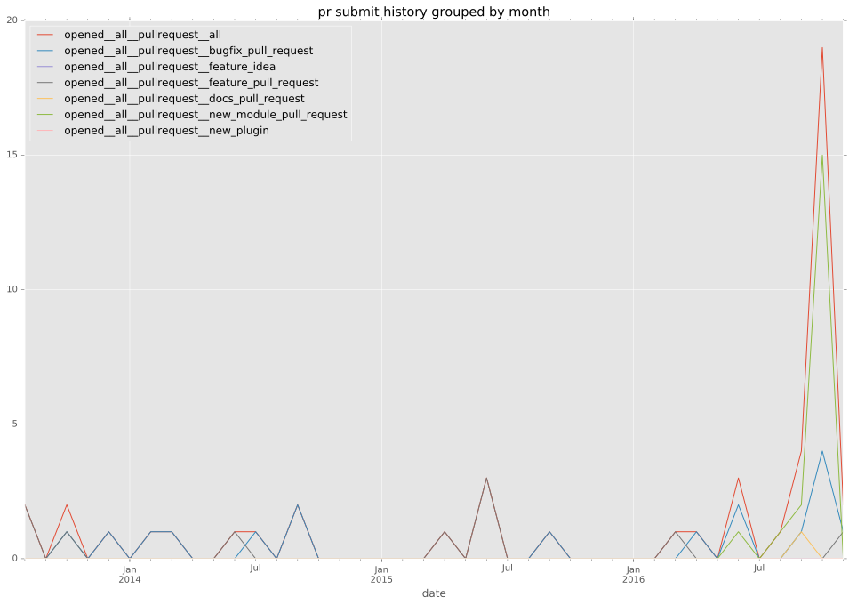
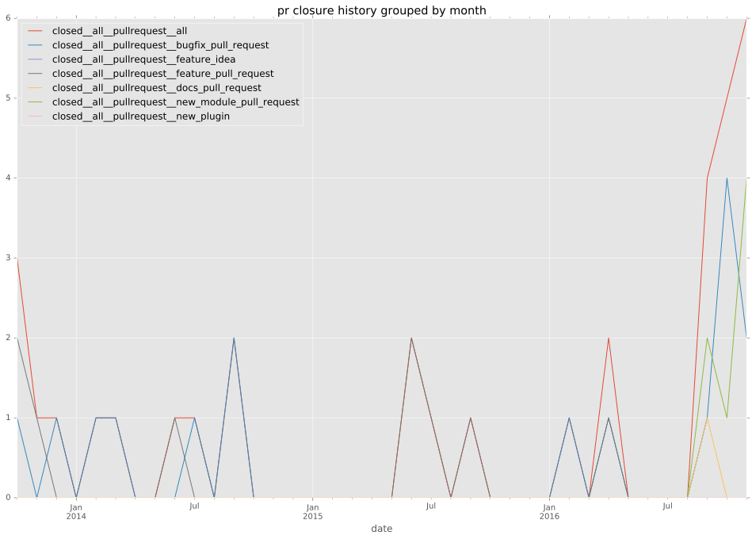

authors
- vincentvdk
maintainers
- joshainglis
- karmab
contributors
- vincentvdk : 29 commits
- sivel : 14 commits
- karmab : 10 commits
- mpdehaan : 5 commits
- mscherer : 4 commits
- ypid : 2 commits
- evgkrsk : 2 commits
- jctanner : 1 commits
- bcoca : 1 commits
- abadger : 1 commits
- UnderGreen : 1 commits
total issue counts
unknown: 1
feature pull request: 10
pullrequest: 50
docs pull request: 1
bugfix pull request: 21
issue: 5
new plugin: 17
bug report: 5
issue history
pullrequest history


days open by issue type
bugfix pull request
count: 29
std: 82.3236882991
min: 0
max: 424
median: 0.0
mean: 22.7586206897
all
count: 52
std: 65.8511135468
min: 0
max: 424
median: 3.0
mean: 25.4423076923
pullrequest
count: 0
std: nan
min: nan
max: nan
median: nan
mean: nan
docs pull request
count: 2
std: 0.0
min: 0
max: 0
median: 0.0
mean: 0.0
feature pull request
count: 12
std: 45.161243105
min: 2
max: 114
median: 35.0
mean: 44.9166666667
issue
count: 0
std: nan
min: nan
max: nan
median: nan
mean: nan
new plugin
count: 5
std: 11.1803398875
min: 19
max: 44
median: 19.0
mean: 24.0
bug report
count: 2
std: 0.0
min: 0
max: 0
median: 0.0
mean: 0.0
closures grouped by total days open